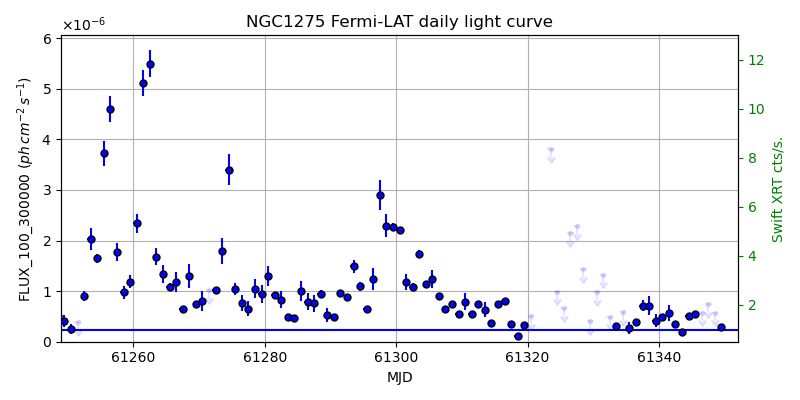
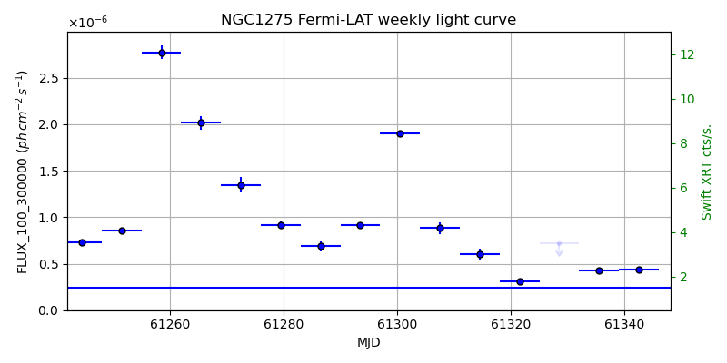
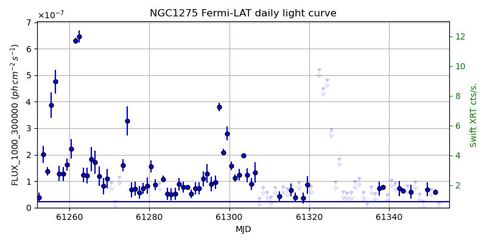
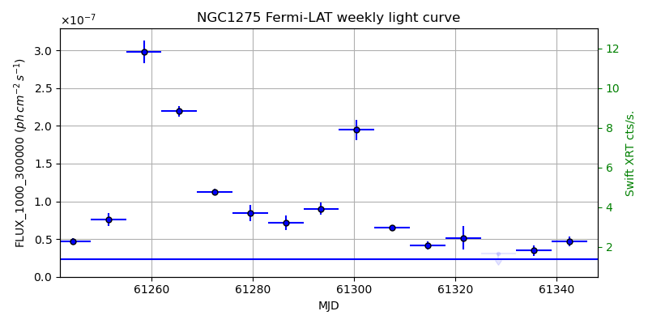

LAT Lightcurve site: https://fermi.gsfc.nasa.gov/ssc/data/access/lat/msl_lc/source/NGC_1275
Swift site: https://www.swift.psu.edu/monitoring/source.php?source=3C84
NED: Query
Time of last update of this page: UT: 2026-11-13 16:13 (MJD: 61357.676)
| Property | Value |
|---|---|
| R.A. | 3:19:48.24 |
| Dec. | 41:30:43.2 |
| z | 0.018 |
| 3FGL SpectrumType | LogParabola |
| 3FGL PL Index | |
| 3FGL Flux_100_300000 | 2.38e-07 1 / (s cm2) |
| 3FGL Flux_1000_300000 | 2.34e-08 1 / (s cm2) |
| 3FGL Flux >200 GeV | 3.81e-11 1 / (s cm2) |
| 3FGL Extrap. Crab >200 GeV | 0.16 |
| 3FGL Flux After EBL Absorption >200GeV | 3.56e-11 1 / (s cm2) |
| 3FGL EBL Crab Fraction >200GeV | 0.15 |

| MJD | dMJD | Flux | dFlux | Frac3FGL | FracCrab>200GeV | EBLFracCrab>200GeV |
|---|---|---|---|---|---|---|
| 61348.50 | 0.50 | 5.73e-07 | 0.00e+00 | 0.00 | 0.00 | 0.00 |
| 61349.50 | 0.50 | 2.85e-07 | 3.82e-08 | 1.20 | 0.19 | 0.18 |
| 61350.50 | 0.50 | 4.18e-07 | 1.35e-07 | 1.76 | 0.28 | 0.26 |
| 61351.50 | 0.50 | 5.98e-07 | 7.12e-08 | 2.51 | 0.41 | 0.38 |
| 61352.50 | 0.50 | 4.16e-07 | 0.00e+00 | 0.00 | 0.00 | 0.00 |

| MJD | dMJD | Flux | dFlux | Frac3FGL | FracCrab>200GeV | EBLFracCrab>200GeV |
|---|---|---|---|---|---|---|
| 61321.50 | 3.50 | 3.06e-07 | 3.60e-08 | 1.29 | 0.21 | 0.20 |
| 61328.50 | 3.50 | 7.16e-07 | 0.00e+00 | 0.00 | 0.00 | 0.00 |
| 61335.50 | 3.50 | 4.23e-07 | 2.19e-08 | 1.78 | 0.29 | 0.27 |
| 61342.50 | 3.50 | 4.37e-07 | 2.62e-08 | 1.84 | 0.30 | 0.28 |
| 61349.50 | 3.50 | 3.61e-07 | 2.05e-08 | 1.52 | 0.25 | 0.23 |

| MJD | dMJD | Flux | dFlux | Frac3FGL | FracCrab>200GeV | EBLFracCrab>200GeV |
|---|---|---|---|---|---|---|
| 61348.50 | 0.50 | 2.47e-08 | 0.00e+00 | 0.00 | 0.00 | 0.00 |
| 61349.50 | 0.50 | 6.92e-08 | 2.62e-08 | 2.95 | 0.48 | 0.45 |
| 61350.50 | 0.50 | 7.15e-08 | 0.00e+00 | 0.00 | 0.00 | 0.00 |
| 61351.50 | 0.50 | 5.84e-08 | 1.08e-08 | 2.49 | 0.40 | 0.37 |
| 61352.50 | 0.50 | 1.88e-08 | 0.00e+00 | 0.00 | 0.00 | 0.00 |

| MJD | dMJD | Flux | dFlux | Frac3FGL | FracCrab>200GeV | EBLFracCrab>200GeV |
|---|---|---|---|---|---|---|
| 61321.50 | 3.50 | 5.17e-08 | 1.60e-08 | 2.21 | 0.36 | 0.34 |
| 61328.50 | 3.50 | 3.05e-08 | 0.00e+00 | 0.00 | 0.00 | 0.00 |
| 61335.50 | 3.50 | 3.46e-08 | 6.47e-09 | 1.48 | 0.24 | 0.22 |
| 61342.50 | 3.50 | 4.72e-08 | 6.67e-09 | 2.02 | 0.33 | 0.31 |
| 61349.50 | 3.50 | 3.77e-08 | 8.15e-09 | 1.61 | 0.26 | 0.24 |
--------------------------------------------------------- Using user-supplied coords: 3:19:48.24 41:30:43.2 2000 --------------------------------------------------------- FLWO UT night of: 2026-11-14 Local Sid. @ Midnight: 03:09 Sunset (-15.0) (local, UT): 18:35 01:35 Sunrise (-15.0) (local, UT): 05:42 12:42 Moonrise (local, UT): Moonset (local, UT): 20:50 03:50 Moon phase: 0.22 --------------------------------------------------------- AzTime LSID UT Obj_el Obj_az Mn_el Mn_az Sep. --------------------------------------------------------- 18:35 21:44 01:35 24.3 54.7 20.1 218.2 132.9 19:05 22:14 02:05 29.6 56.8 16.0 223.7 132.7 19:35 22:44 02:35 35.0 58.6 11.6 228.6 132.5 20:05 23:14 03:05 40.5 60.0 6.9 233.2 132.3 20:35 23:44 03:35 46.1 61.0 2.0 237.3 132.1 21:05 00:14 04:05 51.7 61.5 -2.2 241.2 131.9 21:35 00:44 04:35 57.3 61.1 -9.0 244.8 131.6 22:05 01:14 05:05 62.9 59.5 -14.6 248.2 131.4 22:35 01:44 05:35 68.3 56.0 -20.4 251.4 131.1 23:05 02:14 06:05 73.4 48.7 -26.2 254.5 130.9 23:35 02:44 06:35 77.6 33.9 -32.1 257.5 130.6 00:05 03:14 07:05 80.0 7.2 -38.1 260.6 130.3 00:35 03:45 07:35 79.0 336.4 -44.2 263.8 130.0 01:05 04:15 08:05 75.4 316.7 -50.2 267.1 129.7 01:35 04:45 08:35 70.6 306.7 -56.3 270.9 129.4 02:05 05:15 09:05 65.3 301.7 -62.4 275.3 129.1 02:35 05:45 09:35 59.8 299.4 -68.4 281.1 128.8 03:05 06:15 10:05 54.2 298.6 -74.2 289.9 128.5 03:35 06:45 10:35 48.6 298.7 -79.6 306.2 128.2 04:05 07:15 11:05 43.0 299.5 -83.2 343.5 127.9 04:35 07:45 11:35 37.4 300.7 -82.1 35.1 127.6 05:05 08:15 12:05 32.0 302.3 -77.4 61.2 127.3 05:35 08:45 12:35 26.6 304.3 -71.8 73.4 127.0 05:42 08:52 12:42 25.5 304.8 -70.5 75.2 126.9 --------------------------------------------------------- Dark hours >55 deg.: 5.63 srcstart (UT): 2026-11-14 04:22 srcend (UT): 2026-11-14 10:00